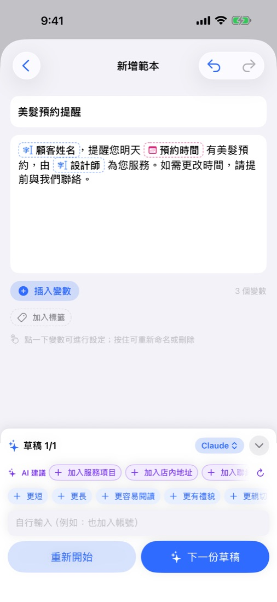
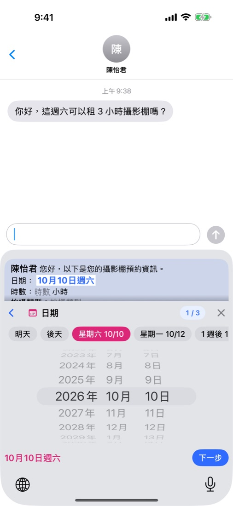
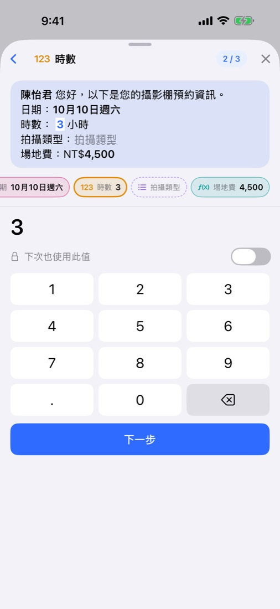
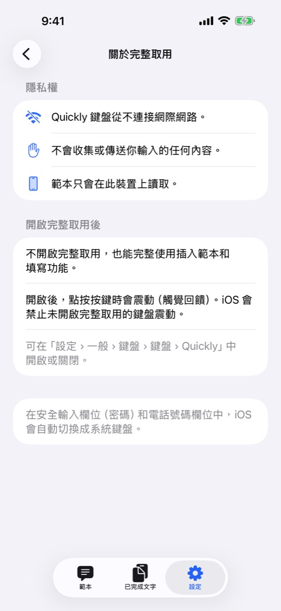

Quickly
每天傳的訊息交給 AI，
要傳時只改要改的。
寫一句話，AI 就幫你寫好訊息，姓名、日期、金額這些要改的地方會自動留空。要傳的時候，在任何 App 裡用 Quickly 鍵盤把空格填上就好。
即將在 App Store 推出免費 · 無廣告 · iOS 18 以上 · iPhone · iPad

寫一句，填一填，傳出去。



需要的，通通都有。
AI 幫你寫
用一句話描述情況，或貼上一直在傳的通知，AI 會連要改的地方（變數）一起寫好。點「更短」「更有禮貌」繼續調整。
AI 由你挑
Apple Intelligence 在裝置上免費產生；也可以用你常用的 ChatGPT、Claude、Gemini App，或你自己的 API 金鑰。不用 AI 自己寫也可以。
任何 App 都能從鍵盤用
在訊息、郵件、聊天 App 裡選範本、填上值就好。打字也照常，支援 11 種語言。
連計算機都不用
明天、後天、這週六點一下就選好；金額自動加上貨幣符號和千分位逗號；設好公式，金額自動填好。
能再用，好找
填好的訊息都收進「已完成文字」，可以再用。用標籤分類，依標題和內容搜尋。
iPhone 和 iPad 保持一致
範本、標籤和已完成文字會在同一 iCloud 帳號的裝置間同步。也能匯出備份檔案。支援淺色和深色模式。
你的訊息只有你看得到
訊息只儲存在你的裝置和你自己的 iCloud 裡，開發者也看不到。不用註冊、沒有廣告、不追蹤，鍵盤也不連網路—— 隱私